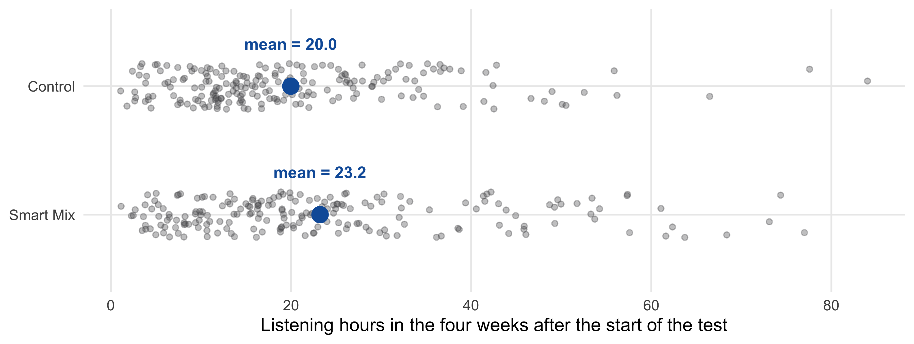
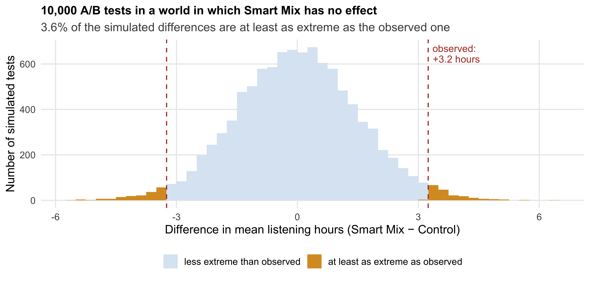
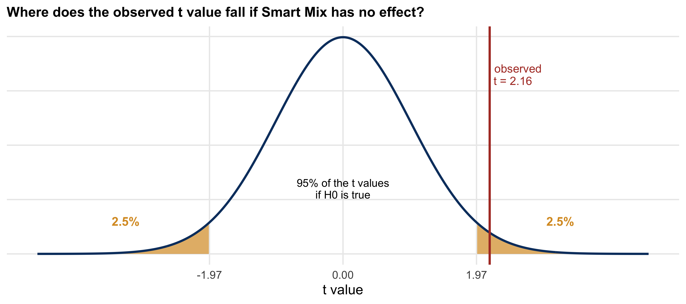
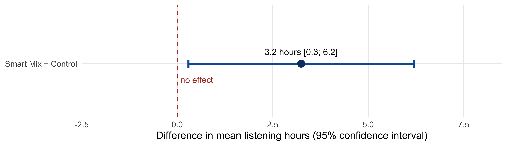
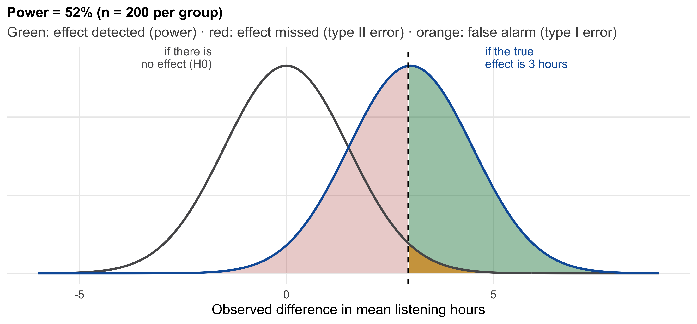
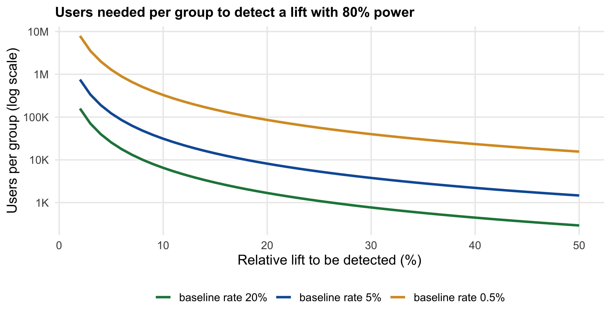
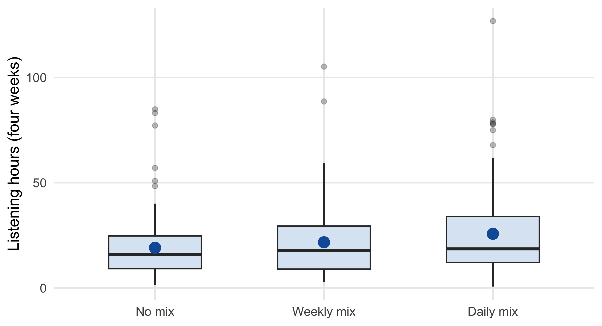
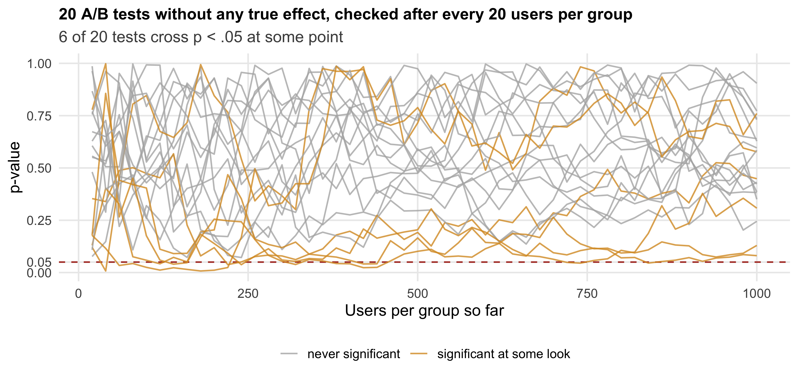

4 Learning from Experiments
Driving question: Did it work?
Randomized experiments are the most credible way to learn what an action causes (Section 1.6). But running an experiment is only half of the job: the result comes from a sample, and every sample carries random error (Chapter 3). This chapter is about the second half — how to read the result of an experiment. After working through this chapter you will be able to:
- Explain the logic of a statistical test: comparing the observed difference with the differences that chance alone would produce
- Run and interpret a t-test for the difference between two groups — and read every line of its output
- Distinguish statistical significance from practical relevance, and quantify the size of an effect
- Compare shares (e.g., conversion rates) between groups
- Explain type I and type II errors and statistical power — and determine the sample size an experiment needs before running it
- Choose an appropriate test for other designs: more than two groups, the same people in both conditions, skewed data
- Use p-values responsibly — and recognize practices that make them meaningless
The chapter builds on the Smart Mix A/B test from Section 3.1.1. The formulas are kept to a minimum: we compute a standard error once, by hand, to see what a test does — afterwards, R does the arithmetic, and we concentrate on the interpretation.
4.1 Back to the A/B test
Recall the situation: a streaming service tested its new Smart Mix feature on 400 randomly selected users. The 200 users with Smart Mix listened 3.2 hours more on average in four weeks than the 200 users without it (Figure 4.1).
In Section 3.1.1, we ran a t-test and postponed its interpretation. Here is the output again:
library(tidyverse)
set.seed(31)
ab_test <- tibble(
group = factor(rep(c("Control", "Smart Mix"), each = 200), levels = c("Smart Mix", "Control")),
hours = c(rgamma(200, shape = 2, scale = 10), rgamma(200, shape = 2, scale = 11.5))
)
t.test(hours ~ group, data = ab_test)
Welch Two Sample t-test
data: hours by group
t = 2.1617, df = 386.96, p-value = 0.03125
alternative hypothesis: true difference in means between group Smart Mix and group Control is not equal to 0
95 percent confidence interval:
0.293571 6.196096
sample estimates:
mean in group Smart Mix mean in group Control
23.21980 19.97497 The product team wants answers to three questions, and this chapter takes them in turn:
- Could the difference be chance? Even if Smart Mix did nothing, two random groups of 200 users would never have exactly the same mean. Is 3.2 hours more than chance would typically produce? (Section 4.2 and Section 4.3)
- How large is the effect — and does it matter? A “real” effect can still be too small to be worth the rollout. (Section 4.4)
- Was the experiment large enough? Would a larger experiment have given a clearer answer — and how large should the next one be? (Section 4.7)
4.2 The difference between two means
4.2.1 Signal and noise
The key to the first question is an idea you already know from Chapter 3: any number computed from a sample varies from sample to sample. This also holds for the difference between two group means. If we could repeat the Smart Mix experiment many times — each time with 400 new users, randomly split — we would get a slightly different difference every time. The distribution of these differences is the sampling distribution of the difference, and it has the same three properties as the sampling distribution of a mean:
- It is centered on the true difference in the population — the true effect of Smart Mix.
- It is approximately normal — thanks to the central limit theorem, even though listening times are skewed.
- Its width is the standard error of the difference, which combines the uncertainty of both group means:
\[ SE_{\bar{x}_1 - \bar{x}_2} = \sqrt{\frac{s_1^2}{n_1} + \frac{s_2^2}{n_2}} \]
For Smart Mix: \(\sqrt{16.2^2 / 200 + 13.7^2 / 200}\) = 1.50 hours. Differences of about ± 1.5 hours are therefore the “typical wobble” we must expect from random sampling alone; differences of about ± 3 hours (two standard errors) are rare, but possible.
This is the only standard error we compute by hand in this chapter. Every test that follows works on the same principle: it compares the signal (the observed difference) with the noise (the standard error — the differences chance alone would produce).
4.2.2 A world in which Smart Mix does nothing
To judge whether 3.2 hours is a lot, imagine a world in which Smart Mix has no effect at all: all users come from the same population, and any difference between the groups is pure chance. Figure 4.2 simulates 10,000 A/B tests in this world.

In this no-effect world, the differences scatter around zero in a bell shape, as the central limit theorem predicts. A difference as large as the one we observed — 3.2 hours or more, in either direction — occurs in only about 3.6% of the simulated tests. So either Smart Mix has an effect, or the team observed a fairly rare accident. This comparison is exactly what a statistical test formalizes.
4.3 Testing a hypothesis
4.3.1 Null and alternative hypothesis
A statistical test turns the thought experiment into a formal procedure. It starts with two competing statements about the population:
- The null hypothesis (\(H_0\)): there is no effect. The mean listening time of all users with Smart Mix equals that of all users without it: \(\mu_1 = \mu_2\).
- The alternative hypothesis (\(H_1\)): there is an effect: \(\mu_1 \neq \mu_2\).
The test asks: if the null hypothesis were true, how surprising would our data be? If they would be very surprising, we reject the null hypothesis in favor of the alternative.
4.3.2 The test statistic: signal divided by noise
To measure “how surprising”, the test expresses the observed difference in units of its standard error:
\[ t = \frac{\text{observed difference} - \text{difference under } H_0}{\text{standard error of the difference}} = \frac{3.24 - 0}{1.50} = 2.16 \]
The observed difference is 2.16 standard errors away from zero. If \(H_0\) is true, t values follow a t-distribution (for samples of this size, practically the normal distribution): 95% of them lie between about −1.97 and +1.97 (Figure 4.3). Our value lies outside this range.

4.3.3 The p-value
The p-value is the probability of observing a difference at least as extreme as the one in our data — if the null hypothesis were true. For Smart Mix, p = 0.031: in a world in which Smart Mix does nothing, only about 3 in 100 experiments would produce a difference of 3.2 hours or more (in either direction). Our simulation in Figure 4.2 gave almost the same answer (3.6%).
The conventional decision rule compares the p-value with a significance level \(\alpha\) chosen in advance, usually 5%:
- If \(p < \alpha\): the result is statistically significant — we reject \(H_0\). For Smart Mix: 0.031 < 0.05, so we conclude that Smart Mix increases listening time.
- If \(p \geq \alpha\): we do not reject \(H_0\). Note the careful wording: this does not show that there is no effect — only that the data are compatible with no effect (Section 4.9).
4.3.4 The confidence interval of the difference
The test gives a yes/no answer; the confidence interval of the difference tells us more: the range of effects that are compatible with the data. For Smart Mix, the 95% interval runs from 0.29 to 6.20 hours (Figure 4.4).

The interval and the test always agree: if the 95% interval does not contain zero, the test is significant at the 5% level, and vice versa. But the interval adds information the p-value hides: the effect could be as small as a quarter of an hour or as large as six hours. For a rollout decision, that range is often more useful than the yes/no of the test.
4.3.5 Reading the output
With these concepts, every line of the output becomes readable (Table 4.1).
t.test()
| Output | Meaning |
|---|---|
Welch Two Sample t-test |
A t-test for two independent groups that does not assume equal variances in both groups (R’s safe default) |
t = 2.1617 |
The observed difference is 2.16 standard errors away from zero |
df = 386.96 |
Degrees of freedom — determine the exact shape of the t-distribution; with large samples, practically irrelevant |
p-value = 0.03125 |
If Smart Mix had no effect, a difference at least this large would occur in 3.1% of experiments |
alternative hypothesis: ... |
The test is two-sided: it looks for a difference in either direction |
95 percent confidence interval: 0.29 6.20 |
The range of effects compatible with the data |
mean in group ... |
The two group means; their difference is the estimated effect |
NoteUnder the hood: one-sided or two-sided?
A two-sided test asks whether the groups differ in either direction; a one-sided test only looks in one direction (e.g., “Smart Mix increases listening time”) and is therefore more likely to find an effect in that direction. The temptation is obvious — but a one-sided test ignores the possibility that the new feature makes things worse, and it must be decided before seeing the data. In business experiments, where a negative effect is exactly what you want to know about, the two-sided test is the right default. In R: t.test(..., alternative = "greater").
NoteUnder the hood: assumptions of the t-test
The t-test for two independent groups relies on three assumptions:
- Independent observations: each user appears in only one group, and users do not influence each other. Random assignment usually takes care of this — but watch out for spillovers (Section 1.6).
- An approximately normal sampling distribution: guaranteed by the central limit theorem for reasonably large samples (Section 3.5). With small samples and strongly skewed data or extreme outliers, consider the alternatives in Section 4.8.
- A metric outcome: the mean must be meaningful (Section 2.3).
Equal variances in both groups are not required: R’s default, the Welch test, does not assume them.
TipYour turn (5 min)
Run the t-test again, but only for the first 50 users of each group: t.test(hours ~ group, data = ab_test |> group_by(group) |> slice_head(n = 50)). How do the difference, the confidence interval, and the p-value change? Explain the change with the standard error.
4.4 How large is the effect?
A significant result tells us that the effect is probably not zero. It does not tell us whether the effect is large enough to matter. With a large enough sample, even a trivial difference becomes significant (Section 4.9). Always report the size of the effect — in three ways:
- In the original unit: Smart Mix users listened 3.2 hours more in four weeks. This is the number a manager can relate to a business case: what are 3.2 extra listening hours per user worth in retention or advertising revenue?
- Relative to the control group: 3.2 hours on a baseline of 20.0 hours is an increase of about 16%.
- Standardized: Cohen’s d divides the difference by the (pooled) standard deviation of the outcome. It expresses the effect in units of “how much users differ anyway” and makes effects comparable across studies with different outcomes.
group_stats <- ab_test |>
group_by(group) |>
summarise(mean = mean(hours), sd = sd(hours))
pooled_sd <- sqrt(mean(group_stats$sd^2))
cohens_d <- diff(rev(group_stats$mean)) / pooled_sd
cohens_d[1] 0.2161689As a rough convention, \(d\) = 0.2 is considered a small, 0.5 a medium, and 0.8 a large effect (Cohen 1992). The effect of Smart Mix (\(d\) = 0.22) is small: the two groups overlap almost completely, as Figure 4.1 showed. Yet a 16% increase in listening time can be very valuable for a streaming service with millions of users. Small in statistical terms is not the same as unimportant in business terms — and vice versa. The conventions are a starting point, not a verdict.
4.5 Reporting the result
A good report of an experiment states the effect, its uncertainty, and the test — in words a manager can follow, with the numbers a statistician needs:
Users with Smart Mix listened on average 23.2 hours in four weeks, compared with 20.0 hours in the control group — an increase of 3.2 hours (+16%, 95% CI [0.3; 6.2] hours). The difference is statistically significant (Welch t-test: t(387) = 2.16, p = .031) but small in standardized terms (d = 0.22). The confidence interval is wide: the true effect could be anywhere between a few minutes and six hours.
Note the order: effect first, uncertainty second, test last. And note the final sentence — the honest caveat that tells the reader how much the conclusion is worth.
4.7 Errors, power, and sample size
4.7.1 Two ways to be wrong
Every test decision can be wrong in two ways (Table 4.2):
| No effect in reality (\(H_0\) true) | Effect in reality (\(H_0\) false) | |
|---|---|---|
| Test significant (reject \(H_0\)) | Type I error — false alarm (probability \(\alpha\)) | Correct: effect detected (probability = power, \(1 - \beta\)) |
| Test not significant (keep \(H_0\)) | Correct | Type II error — effect missed (probability \(\beta\)) |
The significance level \(\alpha\) controls the false alarms: with \(\alpha\) = 5%, one in twenty experiments of an ineffective feature will nevertheless come out significant. The power of a test is the probability of detecting an effect that really exists. A common target is 80% power — accepting that one in five real effects of the assumed size will be missed. Lowering \(\alpha\) (fewer false alarms) reduces the power (more missed effects); the only way to reduce both errors at once is a larger sample.
4.7.2 What determines power
Power depends on three things (Figure 4.6):
- The size of the true effect: large effects are easier to detect than small ones.
- The sample size: larger samples shrink the standard error and separate the “no effect” distribution from the “effect” distribution.
- The variability of the outcome: the more users differ anyway, the harder it is to see the effect.

Applied to Smart Mix: if the true effect is about 3 hours, an experiment with 200 users per group has a power of only about 55% — almost a coin flip. The team was somewhat lucky to get a significant result; with a slightly unluckier draw of users, the same real effect would have been “not significant”.
4.7.3 Determining the sample size in advance
Because power depends on the sample size, the sample size of an experiment should be determined before it starts — based on the smallest effect that would still matter for the business decision. R’s power.t.test() does the computation. For Smart Mix, with the standardized effect \(d\) = 0.22 and the conventional 80% power:
power.t.test(delta = 0.22, sd = 1, sig.level = 0.05, power = 0.80)
Two-sample t test power calculation
n = 325.297
delta = 0.22
sd = 1
sig.level = 0.05
power = 0.8
alternative = two.sided
NOTE: n is number in *each* groupAbout 330 users per group (n is per group) — rather than the 200 the team used. The same function answers the reverse question: with n = 200 instead of power = 0.80, it returns the power of the experiment that was actually run.
For shares, power.prop.test() works the same way. How many users would the Premium test have needed to reliably detect an increase from 5% to 6%?
power.prop.test(p1 = 0.05, p2 = 0.06, sig.level = 0.05, power = 0.80)
Two-sample comparison of proportions power calculation
n = 8157.731
p1 = 0.05
p2 = 0.06
sig.level = 0.05
power = 0.8
alternative = two.sided
NOTE: n is number in *each* groupMore than 8,000 users per group — four times as many as in the test that was actually run.
4.7.4 Why online advertising needs huge experiments
Experiments on shares need large samples when the baseline rate is low and the effect is small — which is exactly the situation in online advertising. Click-through rates are often below 1%, purchase rates after an ad exposure even lower, and a successful campaign may lift them by only a few percent. Figure 4.7 shows how quickly the required sample size grows.

To detect a 10% lift in a click-through rate of 0.5% (from 0.50% to 0.55%), an experiment needs more than 300,000 users per group. In a study of 25 large field experiments on advertising effectiveness at major US firms, Lewis and Rao (2015) show that even experiments with millions of users are often too imprecise to tell whether a campaign pays off — the effect of advertising on an individual’s purchases is tiny compared with how much purchases vary anyway. Remember the eBay experiments from Section 1.2: they needed the entire US market to reach a clear answer.
ImportantWhat this means for your group project
With about 120 respondents split into two conditions, each group has about 60 people. At 80% power, such an experiment can only reliably detect medium-to-large effects (\(d \approx 0.5\) or more): power.t.test(n = 60, sd = 1, power = 0.80) returns a detectable effect of \(d\) = 0.52. For a small effect (\(d\) = 0.2), the power would be below 20%. Design your manipulation to be strong — a subtle wording change will probably not produce a detectable effect — and interpret non-significant results with the corresponding caution.
TipYour turn (5 min)
A retailer’s newsletter has a click-through rate of 2%. The marketing team wants to test a new subject line and considers a 10% relative increase (to 2.2%) worth detecting. (a) How many recipients per version do they need for 80% power? (b) How does the answer change if they only care about a 25% increase? Use power.prop.test().
4.8 Beyond two groups: other designs and tests
The two-group comparison is the workhorse of experimentation, but not every experiment fits it. This section gives a short tour of the most common variations — the logic stays the same, only the R function changes.
4.8.1 More than two groups
Suppose the product team tests three versions: no mix, a mix updated weekly, and a mix updated daily — 150 users each (Figure 4.8).

set.seed(14)
mix_test <- tibble(
version = factor(rep(c("No mix", "Weekly mix", "Daily mix"), each = 150),
levels = c("No mix", "Weekly mix", "Daily mix")),
hours = c(rgamma(150, 2, scale = 10), rgamma(150, 2, scale = 10.8), rgamma(150, 2, scale = 12))
)
mix_test |> group_by(version) |> summarise(n = n(), mean = mean(hours))# A tibble: 3 × 3
version n mean
<fct> <int> <dbl>
1 No mix 150 19.1
2 Weekly mix 150 21.7
3 Daily mix 150 25.7Why not simply run three t-tests (no vs. weekly, no vs. daily, weekly vs. daily)? Because every test has a 5% chance of a false alarm, and the chances add up: with three tests, the probability of at least one false alarm is \(1 - 0.95^3\) = 14%; with ten tests, 40%. This multiple comparisons problem is why several groups are first compared with a single test — the analysis of variance (ANOVA) — which asks whether the group means differ at all:
summary(aov(hours ~ version, data = mix_test)) Df Sum Sq Mean Sq F value Pr(>F)
version 2 3367 1683.4 5.711 0.00355 **
Residuals 447 131755 294.8
---
Signif. codes: 0 '***' 0.001 '**' 0.01 '*' 0.05 '.' 0.1 ' ' 1The F value compares the variation between the group means with the variation within the groups — once again, signal divided by noise. Here, p = 0.004: the versions differ. To find out which versions differ, post-hoc tests compare all pairs while correcting for the number of comparisons (here with the Bonferroni correction, which multiplies each p-value by the number of tests):
pairwise.t.test(mix_test$hours, mix_test$version, p.adjust.method = "bonferroni")
Pairwise comparisons using t tests with pooled SD
data: mix_test$hours and mix_test$version
No mix Weekly mix
Weekly mix 0.5732 -
Daily mix 0.0026 0.1247
P value adjustment method: bonferroni Only the daily mix differs clearly from no mix; the weekly mix lies in between and cannot be distinguished from either.
4.8.2 The same people in both conditions
In a within-subjects design (Section 1.6), every participant experiences both conditions — e.g., 60 users each search for songs with the old and with the new search design, in random order, and we measure how many seconds they need. Because each user serves as their own control, the large differences between users drop out of the comparison. The paired t-test analyzes the differences within each user:
set.seed(4)
skill <- rnorm(60, 0, 8) # users differ a lot ...
search_test <- tibble(
old_design = round(40 + skill + rnorm(60, 0, 3), 1),
new_design = round(38 + skill + rnorm(60, 0, 3), 1) # ... the designs only a little
)
t.test(search_test$new_design, search_test$old_design, paired = TRUE)
Paired t-test
data: search_test$new_design and search_test$old_design
t = -3.8736, df = 59, p-value = 0.0002713
alternative hypothesis: true mean difference is not equal to 0
95 percent confidence interval:
-3.235341 -1.031326
sample estimates:
mean difference
-2.133333 The new design saves about two seconds per search (p < .001). Analyzing the same data as if they came from two independent groups — t.test(search_test$new_design, search_test$old_design) — gives p = 0.14: the two seconds disappear in the noise of how differently fast users are. Using the right test for the design matters.
4.8.3 When the mean is not the right summary
The t-test compares means. For strongly skewed outcomes with extreme values, or for ordinal outcomes such as ratings on a scale from “poor” to “excellent” (Section 2.3), non-parametric tests based on ranks are an alternative: the Wilcoxon rank-sum test (also called Mann–Whitney U test) for two groups, wilcox.test(), and the Kruskal–Wallis test for more than two groups, kruskal.test(). They ask, roughly, whether values in one group tend to be higher than in the other — not whether the means differ.
wilcox.test(hours ~ group, data = ab_test)
Wilcoxon rank sum test with continuity correction
data: hours by group
W = 22072, p-value = 0.07318
alternative hypothesis: true location shift is not equal to 0For Smart Mix, the Wilcoxon test gives p = 0.07 — not significant at 5%, while the t-test was. The two tests answer different questions: the t-test is about the average listening time, which heavy listeners pull up; the Wilcoxon test is about the typical user. Which question matters depends on the business case: if revenue depends on total listening time, the mean is the relevant quantity.
4.8.4 Choosing a test
Table 4.3 summarizes the tests of this chapter. In most business experiments, you will need the first two rows.
| Outcome | Groups | Design | Test | R function |
|---|---|---|---|---|
| Metric (e.g., hours, revenue) | 2 | Different people per group | Welch t-test | t.test(y ~ group) |
| Yes/no (e.g., conversion) | 2 or more | Different people per group | Test of proportions / chi-square test | prop.test(), chisq.test() |
| Metric | 2 | Same people in both conditions | Paired t-test | t.test(x1, x2, paired = TRUE) |
| Metric | 3 or more | Different people per group | ANOVA + post-hoc tests | aov(), pairwise.t.test() |
| Ordinal, or metric with extreme skew and small samples | 2 | Different people per group | Wilcoxon rank-sum test | wilcox.test(y ~ group) |
| Ordinal, or metric with extreme skew and small samples | 3 or more | Different people per group | Kruskal–Wallis test | kruskal.test(y ~ group) |
Image placeholder: decision tree for choosing a test (outcome type → number of groups → design)
img/ch04/test_selection.png
4.9 Using p-values responsibly
The procedure of this chapter — state a null hypothesis, compute a p-value, compare it with 5% — is called null hypothesis significance testing (NHST). It is used everywhere, and it is misused almost as often. In 2016, the American Statistical Association took the unusual step of publishing a statement on how p-values should — and should not — be used (Wasserstein and Lazar 2016). The main points are easy to remember.
4.9.1 What a p-value is — and what it is not
The p-value answers the question: if there were no effect, how likely would data like ours be? — in short, \(P(\text{data} \mid H_0)\). Managers usually want the answer to the reverse question: given our data, how likely is it that there is no effect? — \(P(H_0 \mid \text{data})\). The two are not the same, just as “the probability that a person who has a cold has a runny nose” is not “the probability that a person with a runny nose has a cold”.
WarningCommon misinterpretations
For p = 0.031, all of the following statements are wrong:
- “There is a 3.1% probability that Smart Mix has no effect.”
- “There is a 96.9% probability that Smart Mix works.”
- “The effect of Smart Mix is large (or important).”
The correct statement: “If Smart Mix had no effect, a difference of at least this size would occur in 3.1% of experiments of this size.”
4.9.2 Significant is not the same as important — and not significant is not the same as no effect
Statistical significance depends on the sample size. With enough users, even an effect of a few seconds of listening time becomes significant — large platforms with millions of users find “significant” differences almost everywhere. Whether an effect matters is a question for the effect size and the business case (Section 4.4), not for the p-value.
Conversely, a non-significant result does not show that there is no effect. The Premium test (Section 4.6) was not significant, but its confidence interval included increases of almost three percentage points. “Absence of evidence is not evidence of absence”: with a small sample, even a real and relevant effect often goes undetected (Section 4.7).
To get a feel for sample sizes, Table 4.4 shows how many respondents per group are needed to reliably detect some everyday differences in a survey.
| Comparison | Effect size d | Respondents per group for 80% power |
|---|---|---|
| Men are taller than women | 1.85 | 6 |
| People who like spicy food like Indian food more | 0.80 | 26 |
| Men weigh more than women | 0.59 | 46 |
| People who prefer science to art can name more planets | 0.07 | 3,669 |
Many effects that marketers care about are closer to the lower rows than to the upper ones.
4.9.3 The 5% threshold is a convention, not a law of nature
Nothing special happens at p = 0.05. A result with p = 0.049 is not meaningfully stronger evidence than one with p = 0.051 — yet the first is often reported as a success and the second as a failure. Treating 0.05 as a bright line encourages exactly the behavior that makes p-values meaningless. Good practice: report the exact p-value together with the effect size and its confidence interval, and base decisions on all three — plus the costs and benefits of acting.
4.9.4 Peeking: why the sample size must be fixed in advance
A particularly common problem in online experiments: A/B-testing dashboards show the p-value live while the test is running, and it is tempting to stop the test as soon as it turns significant. This practice — called optional stopping or peeking — destroys the meaning of the p-value. The p-value of an experiment without any effect wanders randomly between 0 and 1 as data come in; the more often you look, the more likely it is to dip below 0.05 at some point (Figure 4.9).

The consequence is simple: determine the sample size before the experiment (Section 4.7), and evaluate the test once, at the end. If you need to monitor a test while it runs — e.g., to stop a harmful change early — use methods designed for this purpose (sequential testing), which many A/B-testing platforms offer.
4.9.5 Many metrics, many segments, many tests
The same problem arises without peeking. An A/B-testing dashboard typically reports dozens of metrics — clicks, sessions, revenue, retention — for dozens of segments — new users, returning users, mobile, desktop, each country. With 20 comparisons and no true effect anywhere, the probability of at least one “significant” result is \(1 - 0.95^{20}\) = 64%. Finding something significant is almost guaranteed; reporting only that finding is known as p-hacking. Combined with the tendency of journals, conferences, and management meetings to pay attention mainly to “successful” results (publication bias), it fills the world with effects that do not replicate.
Image placeholder: illustration of publication bias (e.g., distribution of published test statistics with a spike just above the significance threshold)
img/ch04/publication_bias.png
ImportantGood practice for experiments
- Before the experiment: define the outcome, the hypothesis, the smallest effect that would matter, and the sample size — and write them down (pre-registration).
- During the experiment: do not stop early because the result looks good (or bad), unless you use a sequential testing method.
- After the experiment: report the effect size, its confidence interval, and the exact p-value — for the planned outcome first. Label everything else as exploratory.
- Decide with more than the p-value: consider the size of the effect, the uncertainty, and the costs and benefits of acting.
Learning check
(LC4.1) Explain in your own words what the standard error of the difference between two group means measures, and why it gets smaller when the groups get larger.
(LC4.2) An A/B test of a new checkout page yields: difference in average order value +2.40 €, 95% CI [−0.30 €; 5.10 €], p = 0.08. (a) Is the result statistically significant at the 5% level? (b) Write one sentence for the head of e-commerce that describes the result correctly. (c) What would you recommend?
(LC4.3) Which of the following statements about p = 0.02 are correct?
(LC4.4) A test of a new ad creative on 5 million users shows a significant increase in the click-through rate from 0.410% to 0.415% (p < 0.001). Discuss whether the new creative should be rolled out.
(LC4.5) A colleague runs an A/B test, checks the results every morning, and stops the test on the day the p-value falls below 0.05. Explain what is wrong with this approach and how the test should have been planned.
(LC4.6) Which test would you use? (a) Conversion rates of three different newsletter versions. (b) Satisfaction ratings (1–7) of the same 40 customers for two product prototypes. (c) Average basket size of customers who saw a discount banner vs. customers who did not (randomized, 3,000 customers per group).
(LC4.7) Your group project experiment has two conditions with about 60 respondents each. What is the smallest standardized effect (\(d\)) you can detect with 80% power — and what does this imply for the design of your manipulation?
References
Cohen, Jacob. 1992. “A Power Primer.” Psychological Bulletin 112 (1): 155–59.
Lewis, Randall A., and Justin M. Rao. 2015. “The Unfavorable Economics of Measuring the Returns to Advertising.” The Quarterly Journal of Economics 130 (4): 1941–73.
Wasserstein, Ronald L., and Nicole A. Lazar. 2016. “The ASA Statement on p-Values: Context, Process, and Purpose.” The American Statistician 70 (2): 129–33.